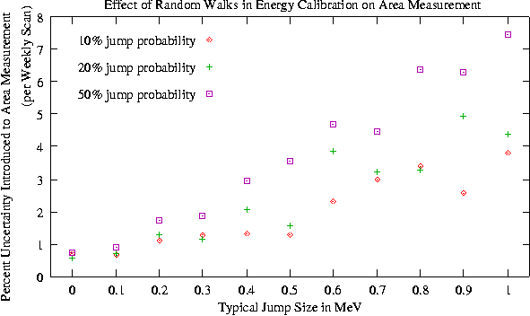

Before any data was taken, the effects of random jitter (high
probability, small jump size) and random jumps (low probability, large
size) were studied.

0.2 MeV - 0.3 MeV jitter has been deemed tolerable.
Beam energy calibration is actively being studied, and is read out
and recorded every ten minutes for this purpose.